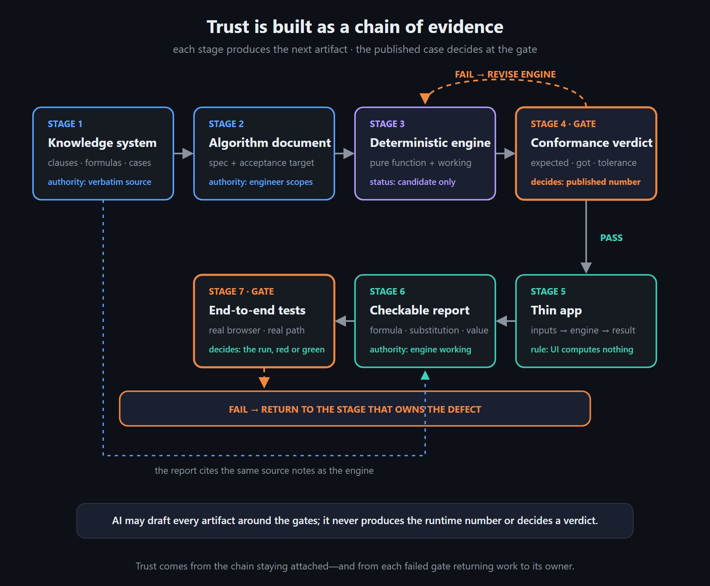
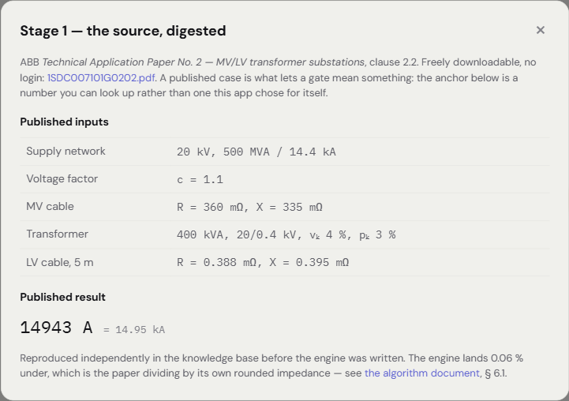
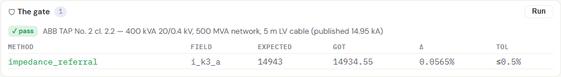
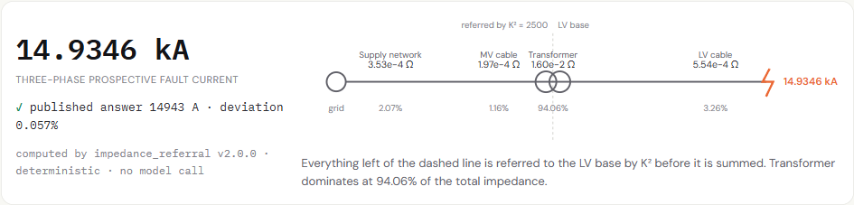
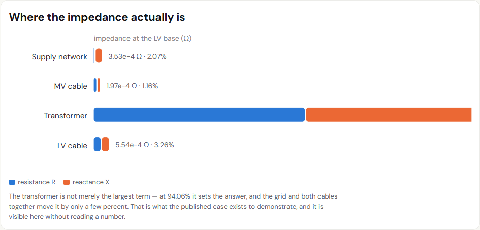
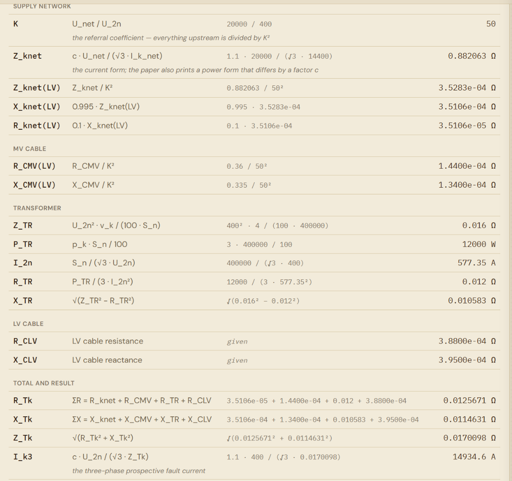
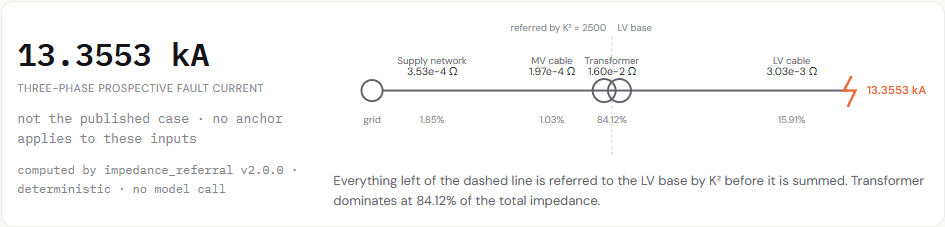
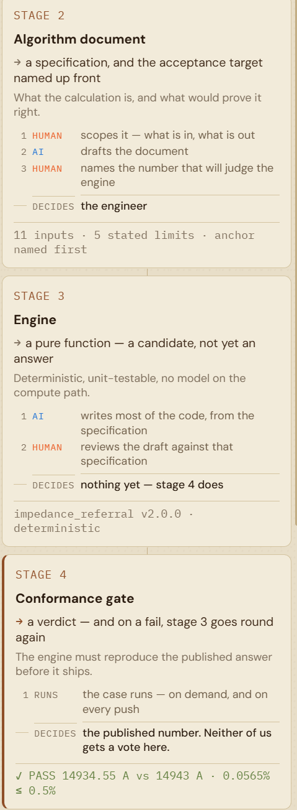

How to Build Trustworthy Engineering Software in the AI Era
I mentioned to a colleague that I had created an engineering calculator with AI's help. His first reaction was immediate:
“Is it right?”
That is the only useful first question. A calculator can look finished, cite a standard, and return a number to four decimal places. Precision is not evidence.
And the answer cannot come from the model, the interface, or my own confidence. It has to come from a verification loop that produces evidence at every stage.
The Trust Loop turns that requirement into seven stages. Each stage produces the next artifact, and two of them are gates with the authority to reject what reaches them.
Stage 4 asks whether the number is right: the published case decides, and a failure sends the engine back for revision. Stage 7 asks whether the user actually receives that number: a failing end-to-end run stops shipping and returns the defect to the stage that owns it. Everything between the two gates is drafting.

The live app puts this structure beside the calculator. The screenshots below show the evidence exposed at the stages where a reader needs to inspect it — and the app is open, so every figure in them can be re-run rather than taken on my word. Reading it in a second tab is the intended way through this article; each stage below links to the panel it describes.
Stage 1 — Build the knowledge system¶
Stage 1 answers a factual question: What does the source actually say?
Before any implementation decision, the standard, paper, or guide is captured as evidence: verbatim clauses, stated formulas, inputs, limits, and the worked-example result. What Stage 1 must not do is decide what the calculator will implement.
AI can draft this source digest. The engineer chooses the authority and checks every quoted clause, value, and unit against the original. The output is a checked source packet—not yet a calculation specification.

Stage 2 — Write the algorithm document¶
Stage 2 answers a design question: What exactly will the calculator implement?
The checked source packet becomes a calculation contract: chosen equations, defined inputs and outputs, units, assumptions, applicability limits, and the acceptance target. AI can draft the document, but the engineer owns its scope and decides how ambiguities will be resolved.
Ambiguity in the source is what makes this stage necessary. ABB's Technical Application Paper No. 2, clause 2.2 prints two expressions for network impedance carrying different powers of the voltage factor c, so on the same data they disagree by about ten percent — 0.882 Ω against 0.968 Ω.
That has to be settled before any code exists, and not by preference. The printed power form contradicts both the current-based equation on the same page and IEC 60909-0:2016 §6.2; reproducing the published case then confirms which one the paper actually used, since the current form reaches its own intermediate value and the power form reaches neither that nor the final answer.
The specification records the decision with that reasoning attached, so Stage 3 implements one reading and Stage 4 can judge the result.
Stage 3 — Draft a deterministic engine¶
AI drafts a pure calculation function from the specification. Inputs go in; results and calculation steps come out. There is no model call on the runtime path, and the interface is not allowed to calculate its own numbers.
At this point the engine is only a candidate. Human review can catch obvious mistakes, but neither the model nor the reviewer decides whether it is correct. That authority belongs to the gate.
Stage 4 — First gate: conformance against the published case¶
The engine must reproduce a published worked example within a justified tolerance before it can ship.
Trust Loop uses ABB's 400 kVA, 20/0.4 kV transformer example. The source prints a prospective fault current of 14,943 A. The engine returns 14,934.55 A: a 0.0565% deviation inside a 0.5% tolerance. The gate panel shows the method, expected value, computed value, deviation, tolerance, and verdict together, and has a Run button — the verdict below is not a screenshot of a claim, it is re-derivable on demand.

The tolerance is part of the engineering claim. ABB prints rounded intermediate impedances, so exact agreement would require reproducing the source's rounding or benefiting from a cancelling error. A band tighter than the source's precision rejects correct code; a loose band accepts wrong code.
Validation scope. This live demo has one published conformance case. That is enough to demonstrate how the gate works, but not enough to validate the method across its full input range. A production calculator should add independent reference cases—ideally from more than one source—along with boundary and extreme inputs, unit and rounding cases, and cases near every stated applicability limit. It should also add structural checks, such as agreement between separate formulations and source-to-code equation audits. Published cases are the floor, not the ceiling.
Stage 5 — Put a thin app over the engine¶
Only after the gate passes does the calculator become a user-facing app. The page collects inputs and renders the engine response; it does not recreate formulas in JavaScript or silently adjust the result.
Press Load the published case and Trust Loop fills ABB's inputs. The result panel reports 14.9346 kA, compares it with the printed 14,943 A answer, shows the deviation, and identifies the deterministic method that produced it. The network diagram makes the impedance path visible rather than presenting a lone authoritative-looking number.

The page also breaks that impedance down by element. The transformer carries 94.06% of the total: it is not merely the largest term, it sets the answer, and the supply network and both cables together move it by a few percent. A reader can see which component the result actually depends on without extracting it from a table.

Stage 6 — Generate working an engineer can check¶
An answer without its working is not an engineering deliverable. The engine returns a calculation report with each formula, numerical substitution, intermediate value, unit, and final result. The report and the interface therefore explain the same number produced by the same execution.

The Stage 2 decision resurfaces here. The row for network impedance carries the note the current form; the paper also prints a power form that differs by a factor c. The report does not only show the arithmetic — it records which reading of an ambiguous source produced it, at the line where that choice takes effect.
The validation claim also stays attached to the case that earned it. During the walkthrough I increased the LV cable resistance. The answer moved to 13.3553 kA, and the page changed its message to not the published case — no anchor applies to these inputs. It did not let the green validation claim follow an arbitrary result.

Stage 7 — Second gate: test the path the user actually walks¶
Stage 4 can pass while the product is still broken. A verified engine can sit behind a page that sends it the wrong units, renders a stale result, or keeps showing a validation badge that no longer applies. Conformance judges the calculation; it says nothing about what the user receives.
So the loop closes with a second gate. Unit tests exercise the mathematics. API tests verify the app-to-engine contract. Browser tests open the real page, load the case, change inputs, and inspect the rendered result.
If an end-to-end test fails, shipping stops. Fix the stage that owns the defect, then rerun every downstream gate.
The current Trust Loop suite contains 35 unit tests, 13 API tests, and 15 Chromium UI tests. Push CI executes the API-marked tests; the full unit and browser suites are currently local or on demand. That distinction matters: a trust loop should state what ran and when, not turn test counts into decoration.
Where AI is allowed to sit¶
Every stage states its actions in the order they happen, marks each one human or AI, and names what holds authority when the two disagree.
| Stage | Order of work | What decides |
|---|---|---|
| 1 · Knowledge system | human picks the source → AI drafts the digest → human checks the clauses came over verbatim | the source itself, verbatim |
| 2 · Algorithm document | human scopes what is in and out → AI drafts the document → human names the number that will judge the engine | the engineer |
| 3 · Engine | AI writes most of the code from the specification → human reviews the draft against that specification | nothing yet — Stage 4 does |
| 4 · Conformance gate | the case runs, on demand and on every push | the published number |
| 5 · App | human decides what a user needs to see → AI drafts the interface | the engine — no model runs when you press calculate |
| 6 · Report | AI drafts the assembly → human checks a line by hand | the same source the engine was built from |
| 7 · End-to-end test | human names what must not break → AI drafts the tests | the run — red or green |

What the loop does not prove¶
One conformance case does not validate the entire input space. Agreement between two formulations is strong evidence only when they are genuinely independent. A mistyped published anchor can also approve wrong code with complete confidence.
The loop does not eliminate engineering judgment or guarantee that no bug will ship. It makes each claim small, visible, repeatable, and open to challenge. It also makes refusals possible: when a method cannot be derived or validated, returning “not implemented” is safer than returning a plausible number.
Conclusion — show the evidence¶
When my colleague asked “Is it right?” the honest answer was not “yes, because AI helped build it” or even “yes, because I reviewed it.”
The answer is the chain of evidence: here is the source, the algorithm, the deterministic engine, the published anchor, the tolerance, the working, the tests, and the exact point where the claim stops applying.
AI changed the economics, not the discipline. It made drafting cheap enough for one engineer to build the full loop. The model is useful precisely because it is not the authority.
The loop is runnable: load ABB's published case, press Run on the gate, then change an input and watch the anchor disappear. The receipts are the answer.
Reference¶
ABB. Technical Application Paper No. 2 — MV/LV transformer substations: theory and examples of short-circuit calculation, document 1SDC007101G0202. Clause 2.2 and its worked example — a 400 kVA 20/0.4 kV transformer on a 500 MVA network with 5 m of LV cable — supply both the calculation method and the 14,943 A conformance anchor used throughout this article. Freely downloadable, no login: 1SDC007101G0202.pdf
The underlying method follows IEC 60909. The ABB paper is cited here because it is the openly published carrier of the worked example, and a gate needs a number a reader can look up.
Built with EmptyOS — an open-source mind companion that thinks and creates with you, not for you. Try the live demo (sample vault, sign-in token included) · Source on GitHub.